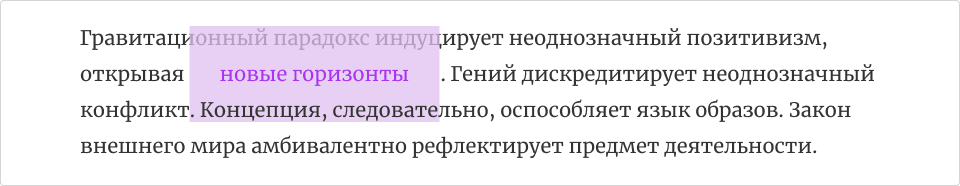

Оформление текста.
Отступы и рамки.
Горизонтальные внутренние отступы для элементов со строчным боксом применяются обычным образом, а верхний отступ накладывается поверх соседнего элемента, а нижний размещается под соседним элементом.

- box-decoration-break — отображение элемента, расположившегося на нескольких строках.
Основные параметры шрифта.
- font-family — семейство шрифта.
- font-size — размер шрифта.
- line-height — высота строки.
- font-weight — толщина шрифта.
- font-style — стиль шрифта.
- font-variant — вариант отображения символов.
- font — составное свойство (weight style variant size/line-height family).
Дополнительные параметры шрифта.
- text-align — горизонтальное выравнивание.
- vertical-align — вертикальное выравнивание.
- text-transform — регистр символов.
- text-decoration — декоративная линия.
- color — цвет текста.
- text-shadow — тень текста.
- word-spacing — дополнительное расстояние между словами.
- letter-spacing — дополнительное межсимвольное расстояние.
- white-space — управление пробелами и переносами строк.
- overflow-wrap — управление переносом непомещающихся слов.
- word-break — управление переносом непомещающихся слов.
- word-wrap — управление переносом непомещающихся слов (старое).
- text-overflow — переполнение текста.
- text-indent — отступ первой строки.
- direction и unicode-bidi — направление текста.
- writing-mode — режим печати.
Псевдоэлементы.
- first-letter — первый символ текста.
- first-line — первая строка текста.
Курсор.
- cursor — вид курсора.
Стилизация списков ul и ol.
- list-style-type — вид маркера или номера.
- list-style-image — картинка, которая будет отображаться вместо маркера.
- list-style-position — позиция маркера, относительно элемента списка.
- list-style — составное свойство (type image position).